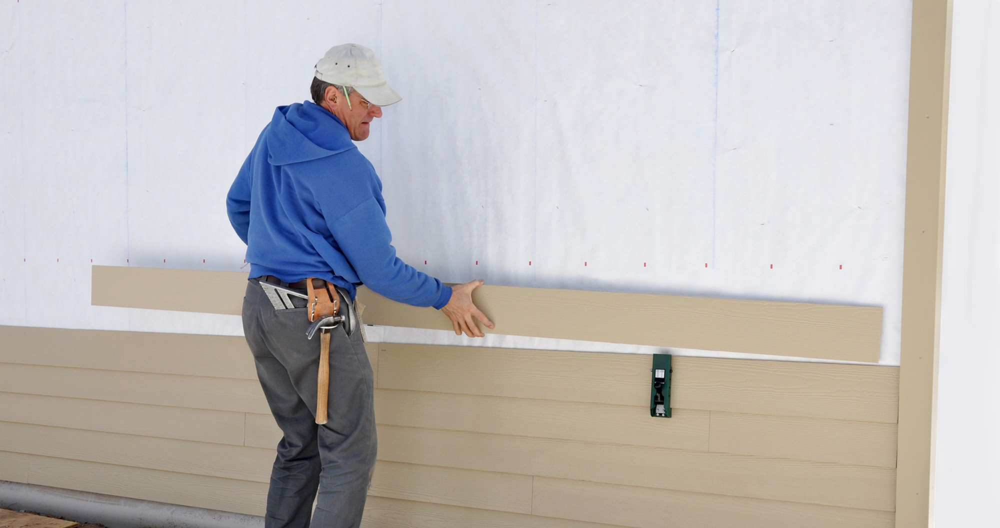

Siding Installation & Replacement in Bethesda, MD

Looking for a trusted siding contractor in Bethesda, MD? DMV General Contracting Group installs and replaces all types of exterior siding for Bethesda homeowners — vinyl, fiber cement, James Hardie, engineered wood, cedar, and more. Whether your siding is aging, damaged, or simply outdated, our licensed in-house team handles everything: material selection, proper installation with house wrap and moisture barriers, all trim and soffit work, and a clean, professional finish that enhances your home's curb appeal and protects it from Maryland's demanding climate for decades.
Siding Services We Offer in Bethesda, MD
DMV General Contracting Group provides a comprehensive range of exterior siding installation and replacement services in Bethesda. Every project includes proper underlayment, moisture barrier, and trim work — not just new boards over old problems.
Full Home Siding Replacement
Partial Siding Replacement & Repair
Vinyl Siding Installation
Fiber Cement Siding (James Hardie)
Engineered Wood Siding (LP SmartSide)
Cedar & Natural Wood Siding
Board & Batten Siding
Shake & Shingle Siding
Insulated Siding Installation
House Wrap & Weather Barrier Installation
Soffit & Fascia Replacement
Trim, Corner Board & Window Casing
Siding Painting & Staining
Storm Damage Siding Repair
Rotted Wood & Sheathing Replacement
Permit Processing & Inspections
Siding Types We Install in Bethesda, MD
Choosing the right siding material for your Bethesda home is a decision that affects your home's appearance, energy efficiency, maintenance requirements, and resale value for the next 20–50 years. Here are the main siding types DMV General Contracting Group installs across Bethesda and Montgomery County:
Most Durable
Fiber Cement Siding (James Hardie)
The premium choice for Bethesda homes. James Hardie fiber cement is resistant to moisture, rot, insects, fire, and impact. It holds paint exceptionally well and maintains its appearance for 30–50 years with minimal maintenance. Available in lap siding, vertical panels, shakes, and trim — in dozens of factory-baked colors.
Best Value
Vinyl Siding
The most widely installed siding in the DMV area. Modern vinyl siding is durable, low-maintenance, fade-resistant, and available in a wide variety of colors, profiles, and textures. Insulated vinyl adds an R-value layer that improves energy efficiency. An excellent choice for Bethesda homeowners focused on cost and practicality.
Natural Look
Engineered Wood (LP SmartSide)
LP SmartSide offers the warm, authentic look of real wood with significantly better durability and moisture resistance. It is treated to resist rot, fungal decay, and impact — making it a strong performer in Maryland's climate. A popular choice for Bethesda homeowners who want a wood aesthetic without the maintenance demands of real wood.
Premium Classic
Cedar & Natural Wood Siding
Cedar and other natural wood sidings deliver unmatched character and warmth that no manufactured product can replicate. Popular on craftsman, colonial, and cape cod homes throughout Bethesda's historic neighborhoods. Requires periodic painting or staining but can last 20–30+ years with proper maintenance.
Siding Material Comparison — What's Best for Bethesda, MD?
Maryland's climate is one of the most demanding in the eastern US for exterior siding — hot, humid summers drive moisture into siding joints, and cold winters cause repeated freeze-thaw cycles that stress seams and fasteners. Here's how the most popular siding materials compare for Bethesda homes:
| Material | Durability | Maintenance | Moisture Resistance | Cost (Full Home) | Best For |
|---|---|---|---|---|---|
| Fiber Cement (James Hardie) Top Pick | Excellent — 30–50 yrs | Low — repaint every 15 yrs | Excellent | $18K – $35K | Best overall performance in MD climate |
| Vinyl (Insulated) | Good — 20–40 yrs | Very low — wash only | Excellent — won't rot | $10K – $20K | Budget-conscious, low-maintenance |
| Engineered Wood (LP SmartSide) | Good — 25–35 yrs | Medium — repaint every 8–10 yrs | Good — treated for moisture | $14K – $26K | Wood look with better durability |
| Natural Cedar / Wood | Moderate — 20–30 yrs | High — paint/stain every 3–5 yrs | Moderate — can rot if neglected | $22K – $50K+ | Historic homes, premium character |
| Stucco | Good — 20–50 yrs | Medium — inspect for cracks annually | Moderate — cracks allow moisture | $18K – $40K | Mediterranean / stucco-style homes |
💡 DMV General Contracting Group's Recommendation for Bethesda: For most Bethesda homeowners, James Hardie fiber cement siding offers the best combination of durability, low maintenance, curb appeal, and return on investment. It is the most popular premium siding choice in the DMV area and holds up exceptionally well against Maryland's climate. If budget is the primary concern, insulated vinyl siding is our recommended alternative.
Signs You Need New Siding on Your Bethesda Home
Many Bethesda homeowners aren't sure when it's time to replace their siding. Here are the most common warning signs that your home's exterior cladding needs immediate attention — before water damage reaches your sheathing and framing:
🔍
Cracking & Warping
Visible cracks, warps, or buckled panels that no longer lie flat against the wall — moisture and air are getting in.
🍄
Rot & Fungal Growth
Soft spots, mold, mildew, or dark staining — especially around window frames and at the bottom of siding panels.
🎨
Frequent Paint Failure
If exterior paint is peeling, bubbling, or failing within just a few years of repainting — failing siding is often the cause.
💧
Interior Water Damage
Water stains on interior walls or in your attic directly beneath exterior siding are a serious warning sign.
🌡️
Rising Energy Bills
Failing siding compromises your home's thermal envelope — drafts and air infiltration drive up heating and cooling costs.
🏚️
Faded or Dated Appearance
Severely faded or outdated siding reduces curb appeal and can impact your Bethesda home's market value at resale.
New Siding & Energy Efficiency — What Bethesda Homeowners Should Know
One of the most overlooked benefits of new siding installation in Bethesda is the improvement in home energy efficiency. Older siding — especially wood siding installed without modern house wrap — allows significant air infiltration that drives up heating and cooling costs year-round.
House Wrap & Moisture Barrier
Every DMV General Contracting Group siding project includes installation of a code-compliant house wrap or weather-resistant barrier beneath the new siding. This dramatically reduces air infiltration and moisture intrusion — the two biggest energy efficiency culprits in older Bethesda homes.
Insulated Vinyl Siding
Insulated vinyl siding adds a continuous layer of rigid foam insulation behind the siding panels — typically adding R-2 to R-4 to your home's exterior walls. For older Bethesda colonials with minimal wall insulation, this can make a meaningful difference in comfort and energy bills.
Rigid Foam Under Fiber Cement
For James Hardie installations, we can add a layer of rigid foam insulation board beneath the fiber cement panels — improving thermal performance without requiring interior wall work. An excellent option during a full siding replacement in Bethesda.
Sealing Penetrations & Transitions
Proper flashing, caulking, and sealing around windows, doors, utility penetrations, and corners is as important as the siding itself. DMV General Contracting Group details every penetration correctly — eliminating the air leakage that poor installations leave behind.
Siding Replacement Cost in Bethesda, MD
Here is a detailed breakdown of siding installation costs in Bethesda, Maryland. All ranges reflect current material and labor costs in the Montgomery County market, including old siding removal, house wrap, and trim:
| Siding Material | Typical Cost (Full Home) | Per Sq Ft (Installed) |
|---|---|---|
| Vinyl Siding (Standard) | $10,000 – $18,000 | $4 – $8 / sq ft |
| Vinyl Siding (Insulated) | $14,000 – $22,000 | $6 – $10 / sq ft |
| Fiber Cement (James Hardie) | $18,000 – $35,000 | $8 – $14 / sq ft |
| Engineered Wood (LP SmartSide) | $14,000 – $26,000 | $7 – $12 / sq ft |
| Cedar / Natural Wood | $22,000 – $50,000+ | $12 – $22 / sq ft |
| Partial Siding Repair / Replacement | $2,500 – $10,000 | Depends on extent of damage |
| Soffit & Fascia Replacement Only | $2,000 – $6,000 | Varies by linear footage |
New siding in Bethesda consistently delivers strong return on investment — fiber cement siding replacement ranks among the top 10 highest-ROI home improvement projects nationally, with Bethesda's high home values amplifying that return further. Contact DMV General Contracting Group for a free, detailed estimate for your specific home.
Why Bethesda Homeowners Choose DMV General Contracting Group for Siding
Exterior siding is one of the most visible and protective elements of your Bethesda home. A poor siding installation — done without proper house wrap, correct flashing, or adequate fastening — can lead to moisture damage, mold, and structural rot within just a few years. DMV General Contracting Group's licensed installation crews take no shortcuts.
🏗️
Licensed In-House CrewNo subcontracting — our own trained siding installers on every job🌧️
Proper WeatherproofingHouse wrap, flashing, and moisture barriers correctly installed🛡️
MHIC Licensed & InsuredFully bonded with 1-year workmanship warranty on all siding work⭐ 4.9-star rated with 97+ verified reviews. DMV General Contracting Group is one of the most trusted siding contractors serving Bethesda, Potomac, and Chevy Chase, MD — and one of the few general contractors who handles siding as part of a complete exterior renovation alongside roofing, windows, and trim.
Our Siding Installation Process in Bethesda
Here is exactly how DMV General Contracting Group manages your siding project in Bethesda — from first assessment to finished exterior:
1
Free In-Home Estimate & Exterior Assessment
We visit your Bethesda home, inspect your existing siding for damage, rot, and moisture intrusion, measure your exterior, and walk you through material options and color choices — at no charge.
2
Material Selection & Color Consultation
We help you select the right siding material, profile, and color for your home's architecture and neighborhood. We bring samples to your home so you can see colors against your existing exterior elements in real lighting conditions.
3
Old Siding Removal & Sheathing Inspection
We remove all existing siding and inspect the underlying sheathing for rot, mold, or moisture damage. Any damaged sheathing or structural wood is replaced before new siding is installed — ensuring your new siding has a solid, dry substrate.
4
House Wrap & Moisture Barrier Installation
We install a continuous, properly lapped weather-resistant barrier (house wrap) across the entire exterior. All penetrations — windows, doors, outlets, fixtures — are individually flashed and sealed to prevent water infiltration at every possible entry point.
5
Siding, Trim & Soffit Installation
Our licensed crew installs your new siding with manufacturer-specified fastener patterns, expansion gaps, and overlap depths. All corner boards, trim, window and door casing, soffit, and fascia are finished to a clean, professional standard.
6
Final Inspection, Caulking & Cleanup
We inspect every seam, penetration, and transition point. All exterior joints are caulked with a paintable, flexible exterior-grade sealant. We remove all debris and do a full exterior walkthrough with you before closing the project.
Siding Repair vs. Full Siding Replacement — Which Do You Need?
Not every Bethesda home with siding problems needs a full replacement. Here's how DMV General Contracting Group helps you make the right call:
Repair makes sense when damage is localized to one or two sections, your siding is less than 15 years old and otherwise in good condition, and matching the existing siding profile and color is feasible. We handle partial repairs, individual panel replacement, and rotted trim repair for Bethesda homeowners who don't yet need a full re-siding.
Full replacement makes sense when siding is over 20 years old with widespread cracking, fading, or failure, when matching existing discontinued profiles is impossible, when significant moisture damage is found beneath the siding during inspection, or when you're undertaking other exterior renovations (roofing, windows) and want to address the entire envelope at once. New siding across the full home delivers better ROI, consistent appearance, and a complete fresh warranty.
DMV General Contracting Group will always give you an honest assessment — recommending repair when that's the right answer, and full replacement only when it genuinely makes more sense for your home and budget.
Serving Bethesda and Surrounding Areas for Siding Installation
In addition to siding installation in Bethesda, MD, our licensed team serves homeowners throughout Montgomery County and the greater DMV area:
Bethesda, MDNorth BethesdaPotomacChevy ChaseRockvilleKensingtonSilver SpringWheatonGaithersburgGarrett ParkCabin JohnWashington DCLaurel
James Hardie siding installation in Chevy Chase & Potomac, MD
Chevy Chase and Potomac are two of the most active markets for fiber cement and James Hardie siding near Bethesda — high home values make premium siding a smart investment, and many older colonials in both areas are overdue for a full exterior upgrade. DMV General Contracting Group has completed James Hardie and engineered wood siding projects throughout both communities and is fully familiar with any HOA color and material restrictions common in these neighborhoods.
Vinyl and fiber cement siding in Rockville & Silver Spring, MD
We install vinyl and fiber cement siding throughout Rockville, Kensington, Silver Spring, and Wheaton — serving homeowners across the full range of Montgomery County's housing stock. Whether it is a 1960s ranch that needs new vinyl or a newer colonial ready for a James Hardie upgrade, DMV General Contracting Group delivers the same quality installation across every project.
Frequently Asked Questions — Siding Installation in Bethesda, MD
Siding replacement in Bethesda typically ranges from $10,000–$20,000 for vinyl on an average-sized home to $18,000–$35,000 for James Hardie fiber cement. Cedar and natural wood siding can run $22,000–$50,000+. These prices include removal of old siding, house wrap installation, new siding, and all trim work. DMV General Contracting Group provides free in-home estimates with exact, itemized pricing before any work begins.
For Bethesda's climate — hot humid summers, cold winters, and frequent rain — James Hardie fiber cement siding is the top overall choice. It is extremely durable, fire-resistant, moisture-proof, and holds paint far longer than wood or engineered alternatives. Insulated vinyl is the best value option. If you love the look of real wood and are comfortable with the maintenance schedule, cedar is a beautiful choice for historic Bethesda homes.
Yes. James Hardie fiber cement siding is one of our most frequently installed siding products throughout Bethesda and Montgomery County. We are experienced with all James Hardie product lines — HardiePlank lap siding, HardiePanel vertical siding, HardieShingle, and HardieTrim — and install them according to James Hardie's installation requirements for warranty compliance.
Most siding replacement projects on a typical Bethesda home take 5–10 business days from start to completion. Smaller homes or partial repairs take 3–5 days. Larger homes or projects requiring significant sheathing repair beneath the siding may take 10–14 days. DMV General Contracting Group provides a detailed day-by-day schedule at the time of estimate so you know exactly what to expect.
Like-for-like siding replacement in Montgomery County typically does not require a building permit. However, if the project involves adding insulation beneath the siding, structural repairs to sheathing, or modifications to window or door openings, a permit may be required. DMV General Contracting Group assesses permit requirements for every siding project in Bethesda and handles any required permits as a standard part of our service — at no additional charge to you.
Yes — significantly. New siding installed with a continuous house wrap or weather barrier eliminates the air infiltration that is common with older, failing siding. Insulated vinyl siding adds R-2 to R-4 to your wall assembly. Rigid foam installed under fiber cement adds even more thermal resistance. For older Bethesda colonials and cape cods with minimal wall insulation, a full siding replacement with proper underlayment can produce noticeable reductions in heating and cooling costs.
Explore Our Other Exterior & Remodeling Services in Bethesda
DMV General Contracting Group handles siding as part of a complete exterior renovation — or as a standalone project. Explore our related services: